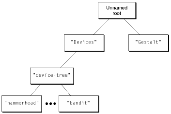

Registry Topology
The topology of the Name Registry can be summarized as follows:
-
An unnamed root exists at the top of the Registry tree.
-
A
Devices
name entry exists under the root. It represents the I/O universe for the computer.
-
The device tree exists as a descendant (child) of the
Devices
name entry, with a new name
device-tree, which is machine independent. This descendant represents the Power Macintosh I/O hardware.
-
The
Gestalt
entry is another child of the root, making it a peer to
Devices. This entry is not guaranteed to be available in future Macintosh computer implementations.
These relationships are diagrammed in
Figure 10-2.
Figure 10-2
Typical Name Registry structure

© 1999 Apple Computer, Inc. – (Last Updated 26 March 99)